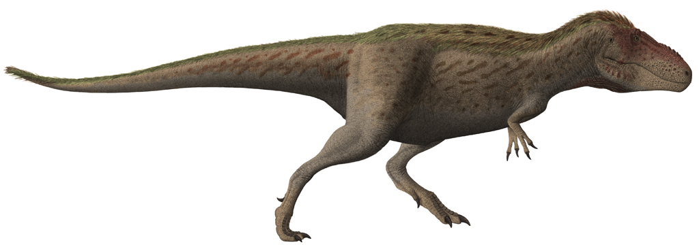

⚔️ Resum Ràpid
🌍 Hàbitat i Època
El Therizinosaurus va viure fa uns 70 milions d'anys, durant el Maastrichtià, en el que avui coneixem com la Formació Nemegt (Mongòlia). En aquell temps, el desert de Gobi era un ecosistema radicalment diferent: un paradís de boscos frondosos i planes inundables.
Convivència de Risc: El seu entorn estava dominat pel Tarbosaurus bataar, un parent proper del T-Rex. L'existència d'un herbívor tan gran i aparentment lent en un territori de superdepredadors suggereix que el Therizinosaurus no era una presa fàcil, sinó un animal capaç de defensar-se amb una ferocitat inesperada.
El Nínxol del "Perezós Terrestre": Ecològicament, ocupava el lloc que milions d'anys després ocuparien els mamífers megateris. La seva estructura li permetia alimentar-se en vertical, arribant a la vegetació més alta i nutritiva que quedava fora de l'abast d'altres herbívors.
🔪 L'Anatomia de l'Especialista
Tot en el Therizinosaurus és una hipèrbole evolutiva, dissenyada per a una funció molt específica: la supervivència a través de l'especialització alimentària.
Les Dagues de la Natura: Les seves urpes d'un metre no eren ganivets de caça, sinó eines multifuncionals. Els paleontòlegs argumenten que funcionaven com ganxos botànics per doblegar branques altes cap a la seva boca. Però la seva forma no enganya: eren també una arma defensiva dissuasòria. Un sol cop d'aquestes "espases" naturals podria haver esventrat qualsevol carnívor que s'atrevís a apropar-se massa.
L'Enginyeria de la Digestió: A diferència de la silueta estilitzada d'un Velociraptor, el Therizinosaurus presentava un ventre ample i robust. Aquesta característica és un argument visual de la seva dieta: necessitava un abdomen voluminós per allotjar intestins extremadament llargs, on la fermentació de la fibra vegetal dura tingués lloc durant hores.
L'Herència Plumada: Encara que l'anatomia òssia és el que més sorprèn, la ciència moderna el reconeix com un animal probablement cobert de protoplomes. Aquest plomatge no servia per volar, sinó per a l'exhibició i la termoregulació, donant-li un aspecte encara més aliè al que estem acostumats a veure en els llibres de dinosaures clàssics.
🏺 Un "Error" de Proporcions Gegants
La crònica del seu descobriment és, possiblement, una de les més surrealistes de la paleontologia, marcada pel context de la Guerra Freda i la manca d'esquelets complets.
El Mite de la Tortuga (1948): Quan una expedició soviètico-mongola va desenterrar unes urpes de gairebé un metre al desert de Gobi, la ment dels científics no va anar cap als dinosaures. El paleontòleg Evgeny Maleev va concloure que pertanyien a una tortuga marina gegant de quatre metres que utilitzava aquestes "dagues" per segar algues. D'aquí neix el seu nom, Therizinosaurus cheloniformis (en forma de tortuga).
El Gir de Guió Definitiu: Durant gairebé 30 anys, el món va creure en aquesta tortuga impossible. No va ser fins als anys 70 i 80, amb la troballa de nous parents (com l'Erlikosaurus), que el trencaclosques va encaixar: no era un rèptil marí, sinó un dinosaure teròpode que havia patit una metamorfosi evolutiva radical cap a l'herbiboria.
🧬 L'Enllaç Evolutiu: El Carnívor "Penedit"
El Therizinosaurus és l'exemple màxim d'evolució convergent, un fenomen on espècies no emparentades acaben tenint aspectes similars per adaptar-se a entorns semblants.
De Depredador a Vegà: Tot i pertànyer al llinatge dels maniraptors —el grup d'elit que inclou els Velociraptors—, el Therizinosaurus va "abandonar" la carn. Aquesta transició va forçar la seva anatomia a canviar dràsticament: el seu crani es va reduir i les seves potes es van fer massives per suportar el seu nou pes.
El "Gorilla" del Cretaci: Els paleontòlegs argumenten que es comportava com una mandra gegant o un gorilla: un animal que utilitza la seva força bruta per dominar el bosc, seient sobre els seus malucs per allargar el coll i utilitzant les seves urpes com ganxos per apropar-se la vegetació més tendra.
🥊 Duel de Titans: Therizinosaurus vs. Tarbosaurus

Recreació del Tarbosaurus, el superdepredador de la Formació Nemegt.
Tot i no tenir l'instint d'un caçador, el Therizinosaurus era, paradoxalment, un dels animals més perillosos del seu temps. No buscava el conflicte, però estava perfectament equipat per acabar-lo.
L'Estratègia de la Simitarra: Davant la presència d'un Tarbosaurus (el "T-Rex asiàtic"), el Therizinosaurus no fugia. Els paleontòlegs suggereixen que s'alçava sobre les seves robustes potes posteriors, guanyant una alçada imponent de més de 5 metres, i brandava les seves urpes com si fossin simitarres mortals.
Un Cop Letal: Una sola d'aquestes urpes d'un metre de llargada, impulsada per la musculatura dels seus braços, podia exercir una pressió suficient per obrir el ventre de qualsevol depredador d'un sol cop. Era la "defensa activa" portada a l'extrem: un herbívor que cap carnívor s'atrevia a molestar sense arriscar-se a una ferida fatal.
🎬 De la Ciència a la Pantalla: Jurassic World
Recull d'escenes del Therizinosaurus a 'Jurassic World Dominion'.
El Therizinosaurus ha passat de ser un desconegut a convertir-se en una estrella mediàtica, tot i que amb algunes "llicències" de Hollywood.
El Cas de Jurassic World Dominion: La seva aparició a la gran pantalla el va presentar com un animal cec, silenciós i extremadament territorial. Tot i que la ceguesa és una llicència creativa (no hi ha proves fòssils que ho indiquin), la pel·lícula va encertar en dos aspectes clau: el seu aspecte plomat, que s'ajusta a les teories actuals, i la seva naturalesa territorial.
El Mite del "Monstre": A causa de les seves urpes terrorífiques, sovint se'l representa com un monstre sanguinari. No obstant això, la realitat científica ens dibuixa un caràcter més semblant al d'un os panda gegant o un rinoceront: un animal generalment tranquil i centrat a alimentar-se, però amb un temperament explosiu i una força devastadora si algú s'atreveix a envair el seu espai personal.
💡 Anècdotes i Comportament Social
Passos Pesats: L'Estabilitat d'un Gegant
A diferència dels seus "cosins" carnívors com el Velociraptor o el Tyrannosaurus, que caminaven sobre tres dits (digitígrads), el Therizinosaurus va desenvolupar una solució anatòmica única:
- El Quart Dit: Tenia quatre dits a cada pota que tocaven directament el terra. Aquesta característica era una adaptació mecànica per suportar i distribuir millor les seves 5 tones de pes mentre es movia pels terrenys tous i humits de Mongòlia.
- Aquesta estructura li conferia una estabilitat extra, gairebé com si tingués una "pata d'elefant" integrada en el cos d'un teròpode.
Nius Gegants: Una Vida Social Inesperada
Tot i que el Therizinosaurus sol ser representat com un solitari, les proves fòssils de la seva família suggereixen una faceta molt més familiar:
Ous com Pilotes de Bitlles: S'han descobert nius amb ous d'una mida impressionant, disposats en colònies massives. Aquesta troballa indica que no pondrien els ous de qualsevol manera, sinó que es reunien en zones de cria compartides per protegir millor la descendència.
Aquest comportament social és una prova més de la seva complexitat intel·lectual i d'una estratègia de supervivència grupal molt efectiva contra els grans depredadors de l'època.
📚 REFERÈNCIES BIBLIOGRÀFIQUES
- Maleev, E. A. (1954). Tertiary giants of Mongolia. (Descripció original de les urpes). Paleontological Institute of the USSR Academy of Sciences.
- Barsbold, R. (1976). A new family of Upper Cretaceous theropods from Mongolia. Transactions of the Joint Soviet-Mongolian Paleontological Expedition.
- Clark, J. M. et al. (2004). Cranial anatomy of the therizinosaur Erlikosaurus andrewsi. Journal of Vertebrate Paleontology.
- Zanno, L. E. (2010). A taxonomic and phylogenetic re-evaluation of Therizinosauria (Dinosauria: Theropoda). Journal of Systematic Palaeontology.